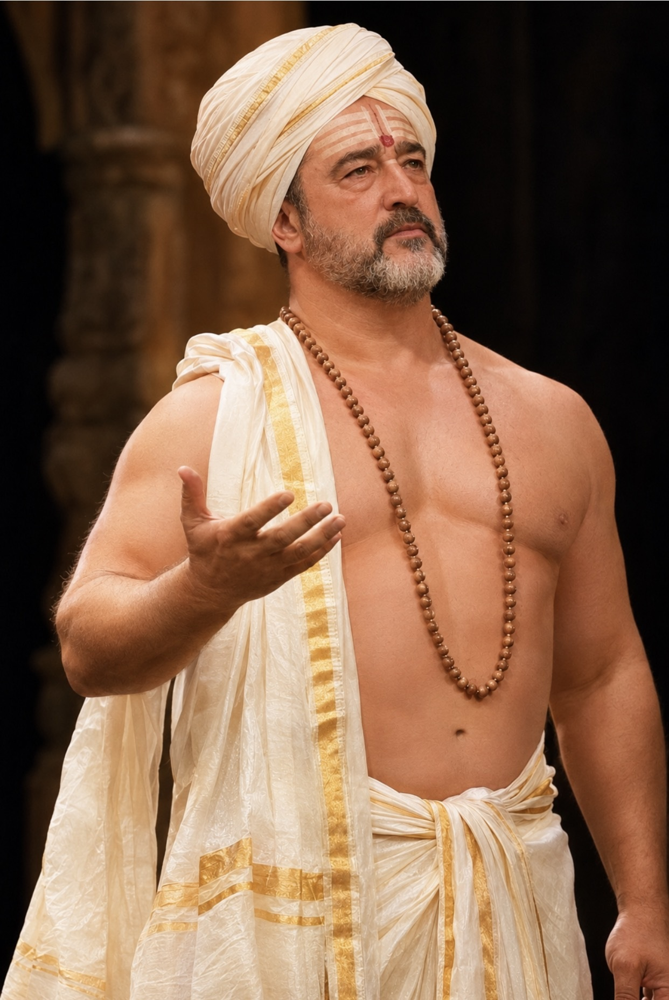
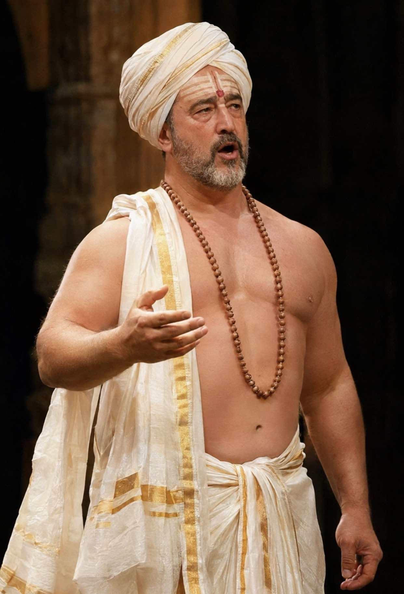
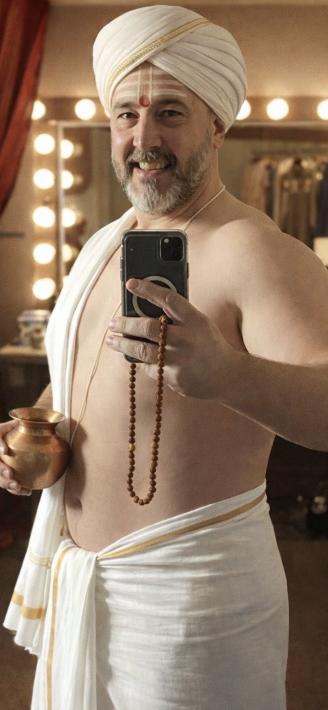

2026年法国歌剧《拉克美》—— Guillaume Dussau Bass 饰演尼拉坎塔
法国男低音歌唱家 Guillaume Dussau Bass 于2026年演绎法国作曲家莱奥·德利布（Léo Delibes）歌剧《拉克美》（Lakmé）中的尼拉坎塔（Nilakantha）一角。
这组三幅照片呈现了舞台人物造型、演唱瞬间及后台化妆间的艺术家形象。



法国男低音歌唱家 Guillaume Dussau Bass 于2026年演绎法国作曲家莱奥·德利布（Léo Delibes）歌剧《拉克美》（Lakmé）中的尼拉坎塔（Nilakantha）一角。
这组三幅照片呈现了舞台人物造型、演唱瞬间及后台化妆间的艺术家形象。


